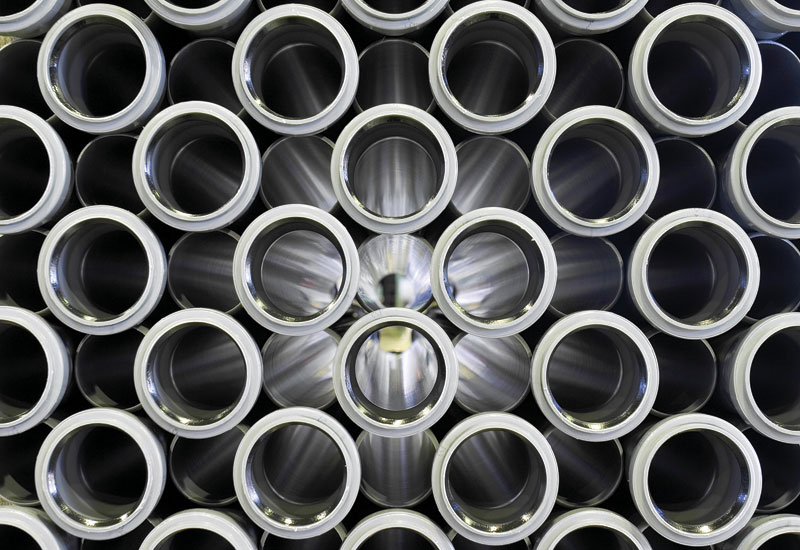
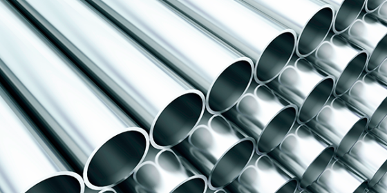
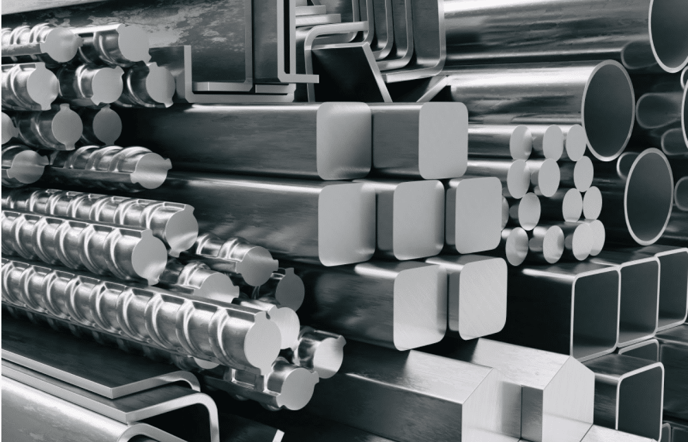
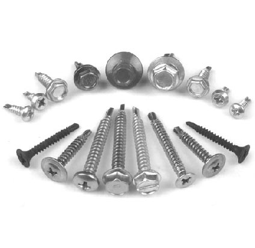
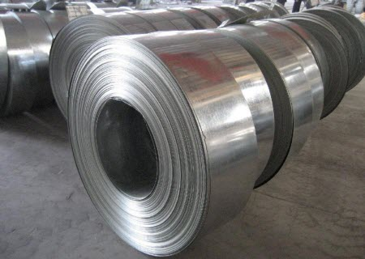
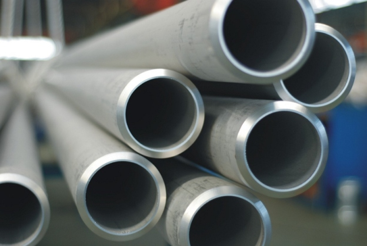

ACEROS INOXIDABLES
División de aceros inoxidables
Tal como el nombre lo indica, los aceros inoxidables son más resistentes a la corrosión y a las manchas de lo que son los aceros al carbono y de baja aleación. Este tipo de resistencia superior a la corrosión se produce por el agregado del elemento cromo a las aleaciones de hierro y carbono.
La mínima cantidad de cromo necesaria para conferir esta resistencia superior a la corrosión depende de los agentes de corrosión. El instituto Norteamericanos de Hierro y Acero ha elegido el 10 por ciento de cromo la línea divisoria entre acero aleados y aceros inoxidables, mientras que otro establecen ese límite entre el 10,5% y el 11%. La mayoría de ellos están disponibles en sus formas principales tales como planchas, barras, flejes, hojas, planchuelas y tubos.
En 1912 Harry Brealey, Jefe de Laboratorio Brown-Firth Research en Inglaterra, mientras estaba intentando desarrollar aceros que fueran resistentes a la suciedad y a la corrosión que se producía en los tambores de revólveres, informó que una composición de un 12,8% de cromo y 0,24% de carbón era muy resistente a la corrosión.
Las aleaciones austeníticas de niquel-cromo-hierro fueron desarrolladles en Alemania durante los años 1909-1912 per Benno Strauss y Edward Maurer. Los trabajos posteriores realizados por Strauss y otros más recientes condujeron a los aceros versátiles de 18% de cromo, 8% de níquel popularmente llamados 18-8 que son tan ampliamente utilizados en la actualidad.
La resistencia a la corrosión de los aceros inoxidables es debida a una delgada película de óxido de cromo que se forma en la superficie del acero. A pesar de ser sumamente delgada ésta película invisible fuertemente adherida al metal, lo protege contra los distintos tipos de corrosión, renovándose inmediatamente cuando es dañada por abrasión, corte, maquinado, etc.
Las principales ventajas del acero inoxidable son:
- Alta resistencia a la corrosión.
- Alta resistencia mecánica.
- Apariencia y propiedades higiénicas.
- Resistencia a altas y bajas temperaturas.
- Buenas propiedades de soldabilidad, mecanizado, corte, doblado y plegado.
- Bajo costo de mantenimiento.
- Diferentes terminaciones de moderno y agradable aspecto es 100% reciclable.
Como consecuencia del agregado de los elementos cromo, niquel, molibdeno, titanio, niobio y otros se producen distintos tipos de acero inoxidable, cada uno con diferentes propiedades.
Austeníticos
Ferríticos
Martensíticos
Dúplex
Aceros inoxidables Austeníticos
Son aquellos que por el agregado de níquel en cantidad suficiente modifican su estructura y se transforman en austeníticos. La composición básica de los aceros inoxidables austeníticos es 18% de cromo y 8% de níquel. Los grados austeníticos son los más comúnmente utilizados abarcando entre el 50 y el 70% de la producción total, y dentro de los austeníticos el 304 es por lejos el más común.
Usos más comunes
- Piletas para cocina.
- Equipos para la industria de la alimentacion.
- Equipos para la industria química.
- Aplicaciones en arquitectura.
Grados más comunes
- 304Uso generalizado con buena resistencia a la corrosión para la mayoría de las aplicaciones.
- 310Equipos y partes para hornos. Resiste temperaturas de 900 a 1000° C.
- 316Utilizado donde se requiere mayor resistencia a la corrosión, ejemplo:equipos marinos.
- 321Contiene titanio, es muy apto para soldaduras críticas y resiste temperaturas de hasta 800° C.
Propiedades básicas
- Excelente resistencia a la corrosión.
- Excelente soldabilidad.
- Excelente formabilidad, ductibilidad.
- Fácil limpieza y condiciones de higiene.
- Excelentes propiedades a altas y bajas temperaturas.
- Antimagnético.
Aceros inoxidables Ferríticos
Son aquellos que contienen básicamente cromo en porcentajes que varían entre 12% y 18% con un bajo contenido de carbono.
Grados más comunes
- 409Es un acero resistente a las altas temperaturas, con buena formabilidad y soldabilidad. Principalmente utilizado para sistemas de escape de automotores y donde se requiera una resistencia mayor que la que ofrece la chapa galvanizada.
- 430Utensilios de cocina. Artículos ornamentales. Revestimientos de heladeras, secarropas, lavavajillas, etc.
Propiedades básicas
- Moderada a buena resistencia a la corrosión dependiendo del porcentaje de cromo.
- Menor soldabilidad.
- Menor formabilidad.
- No son templables.
- Son magnéticos.
Aceros inoxidables Martensíticos
Fueron los primeros desarrollados comercialmente (como cuchillería) y tienen un relativamente alto contenido de carbono (0,1 a 1,2%) comparado con otros aceros inoxidables. Contienen básicamente cromo en porcentajes entre 12 y 18%.
Usos más comunes
- Hojas para cuchillos.
- Instrumentos quirúrgicos.
- Resortes.
- Ejes.
Grados más comunes
- 410Grado de uso generalizado en ambientes moderadamente corrosivos.
- 420Acero templable utilizado en herramientas de corte, instrumentos quirúrgicos, etc.
Propiedades básicas
- Son templables por tratamiento térmico.
- Tienen moderada resistencia a la corrosión.
- Menor soldabilidad.
- Son magnéticos.
Aceros inoxidables Dúplex
Son aceros inoxidables que contienen porcentajes relativamente altos de cromo (entre 18 y 28%) y porcentajes moderados que níquel (4,5 y 8%). El contenido de níquel es insuficiente para generar una estructura austenítica completa y el resultado de la combinación de las estructuras ferrítica y austenítica es llamada "dúplex". La mayoría de los aceros dúplex contienen entre 2,5 y 4% de molibdeno.
Usos más comunes
- Uso marino especialmente cuando las temperaturas son algo elevadas.
- Plantas de desalinización..
- Intercambiadores de calor.
- Plantas petroquímicas.
Grados más comunes
- 2205Resistencia a la corrosión mayor que el grado 361L. Utilizado en intercambiadores de calor, aplicaciones marinas y de refinerías.
Propiedades básicas
- Mayor resistencia al ataque del cloro.
- Mayor resistencia a la tracción y a la elongación que los aceros austeníticos y ferríticos.
- Buena formabilidad y soldabilidad.